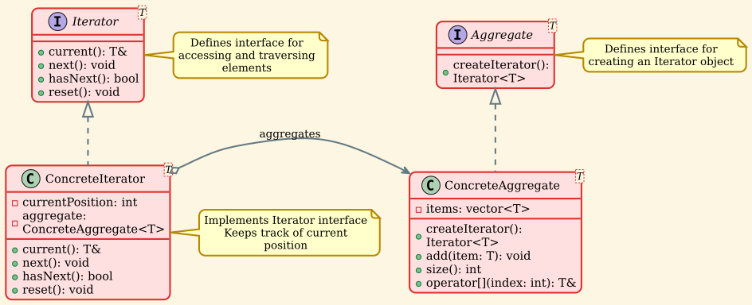
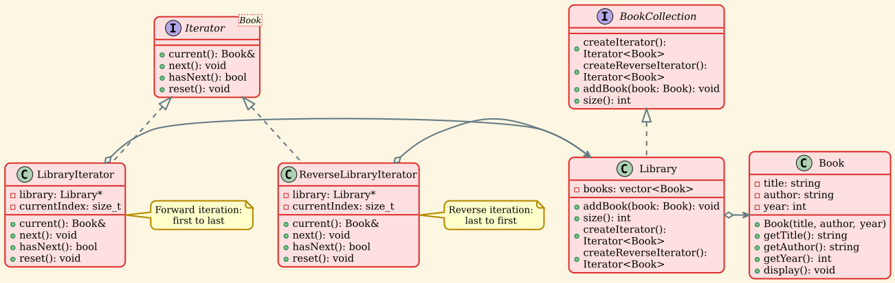
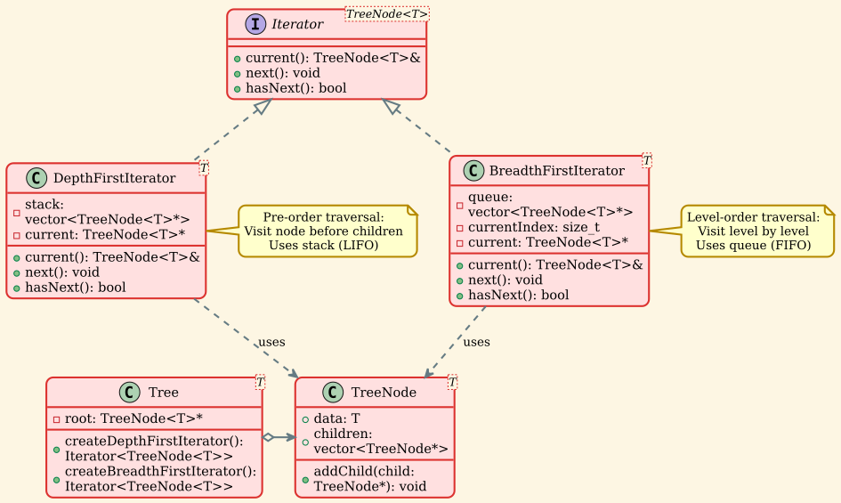

Iterator Pattern¶
Overview¶
The Iterator pattern is a behavioral design pattern that provides a way to access the elements of an aggregate object sequentially without exposing its underlying representation. It decouples algorithms from containers, enabling you to traverse different data structures with a uniform interface.
Intent¶
- Provide a way to access the elements of an aggregate object sequentially without exposing its underlying representation
- Support multiple simultaneous traversals of aggregate objects
- Provide a uniform interface for traversing different aggregate structures (polymorphic iteration)
Problem¶
When you have a collection of objects, you need to provide a way to access its elements without exposing the underlying representation (list, stack, tree, etc.). You might need:
- Different ways to traverse the same collection (forward, backward, filtered)
- Multiple simultaneous traversals
- A uniform interface for different collection types
- To keep the collection interface simple and focused on storage
Directly exposing the collection's internal structure: - Violates encapsulation - Couples clients to specific collection implementations - Makes it difficult to change the collection's internal structure - Clutters the collection interface with traversal methods
Solution¶
The Iterator pattern suggests extracting the traversal behavior of a collection into a separate object called an iterator. The iterator object encapsulates all the details of accessing and traversing the collection.
Iterators implement various traversal algorithms, but most importantly, they all provide the same interface for accessing elements. This makes the client code compatible with any collection type or any traversal algorithm.
Structure¶

Components¶
-
Iterator: Declares an interface for accessing and traversing elements
current(): Returns the current elementnext(): Moves to the next elementhasNext(): Checks if there are more elementsreset(): Resets the iterator to the beginning
-
ConcreteIterator: Implements the Iterator interface and keeps track of the current position in the traversal
-
Aggregate: Declares an interface for creating an Iterator object
-
ConcreteAggregate: Implements the Iterator creation interface to return an instance of the proper ConcreteIterator
Implementation Details¶
Basic Iterator Interface¶
Aggregate Interface¶
Concrete Iterator¶
Concrete Aggregate¶
Real-World Example: Book Library¶

Implementation¶
Advanced Patterns¶
1. Filtered Iterator¶
Iterates only over elements that match a predicate:
2. Tree Traversal Iterators¶

Depth-First Iterator (Pre-order)¶
Breadth-First Iterator (Level-order)¶
Applicability¶
Use the Iterator pattern when:
-
You want to access contents without exposing internal structure: The collection's interface remains simple and focused on storage.
-
You need multiple traversal algorithms: Different iterators can implement different traversal strategies (forward, backward, filtered, etc.).
-
You want to provide a uniform interface: Same interface for different collection types enables polymorphic iteration.
-
You need multiple simultaneous traversals: Each iterator maintains its own state independently.
-
You want to decouple traversal from collection: Enables adding new traversal algorithms without modifying the collection.
Advantages¶
-
Single Responsibility Principle: Separates collection storage from traversal algorithms.
-
Open/Closed Principle: Introduce new iterators without changing existing code.
-
Multiple Simultaneous Traversals: Each iterator maintains independent state.
-
Uniform Interface: Same interface for different collection types.
-
Encapsulation: Hides internal structure of collections.
-
Simplified Collection Interface: Collection doesn't need traversal methods.
-
Lazy Evaluation: Can implement iterators that generate elements on-demand.
Disadvantages¶
-
Overkill for Simple Collections: For simple collections with straightforward traversal, the pattern may add unnecessary complexity.
-
Less Efficient: May be less efficient than direct access for some specialized traversals.
-
Increased Complexity: Introduces additional classes and interfaces.
-
State Management: Iterator state must be carefully managed, especially with concurrent modifications.
-
Iterator Invalidation: Modifying the collection while iterating can invalidate iterators.
Relations with Other Patterns¶
- Composite: Iterators are often used to traverse Composite structures.
- Factory Method: Collections can use Factory Method to create iterators.
- Memento: Can be used together with Iterator to capture and restore the iterator's state.
- Visitor: Visitor can be used along with Iterator to perform operations on elements during traversal.
- Command: Commands can be stored in a collection and executed using an iterator.
Iterator in C++ STL¶
The C++ Standard Template Library (STL) extensively uses the Iterator pattern:
STL iterator categories: - Input Iterator: Read-only, forward-only - Output Iterator: Write-only, forward-only - Forward Iterator: Read/write, forward-only, multi-pass - Bidirectional Iterator: Forward and backward movement - Random Access Iterator: Jump to any position in constant time
Best Practices¶
-
Provide const iterators: For read-only access to collections.
-
Handle concurrent modification: Define behavior when collection is modified during iteration (fail-fast, snapshot, etc.).
-
Use smart pointers: Manage iterator lifetime with smart pointers.
-
Document iterator invalidation: Clearly specify when iterators become invalid.
-
Consider iterator categories: Choose appropriate iterator capabilities for your use case.
-
Implement standard interface: Follow established conventions (begin(), end(), operator++, etc.).
-
Support range-based for: Make your collections compatible with C++ range-based for loops.
-
Exception safety: Ensure iterators maintain valid state even when exceptions occur.
Example Usage Scenarios¶
1. Database Result Sets¶
2. File System Navigation¶
3. Network Stream Processing¶
4. GUI Widget Trees¶
Performance Considerations¶
-
Iterator Creation Cost: Consider pooling or caching iterators for frequently accessed collections.
-
State Overhead: Each iterator maintains position state. For large collections with many simultaneous iterations, this can be significant.
-
Virtual Function Calls: Abstract iterators use virtual functions, which have a small overhead. For performance-critical code, consider template-based iterators.
-
Cache Locality: Sequential iteration has better cache performance than random access.
-
Lazy Evaluation: Iterators can implement lazy evaluation to avoid loading all data upfront.
Conclusion¶
The Iterator pattern is one of the most widely used design patterns, particularly in collections and data structures. It provides a clean separation between data storage and data traversal, enabling:
- Uniform access to different collection types
- Multiple traversal strategies
- Independent iteration state
- Simplified collection interfaces
While the pattern adds some complexity, the benefits in terms of flexibility, maintainability, and reusability make it invaluable for working with collections of objects. The pattern is so fundamental that it's built into most modern programming languages, including C++ (STL iterators), Java (Iterator interface), Python (iterator protocol), and many others.